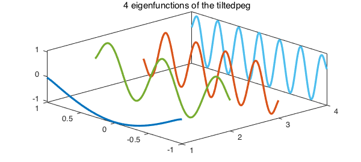
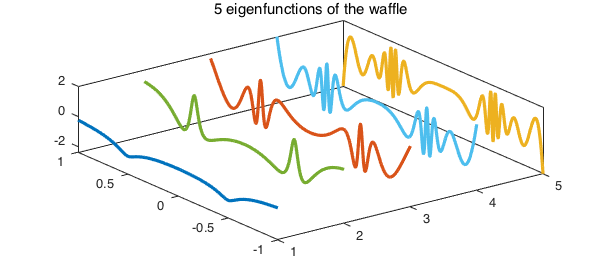
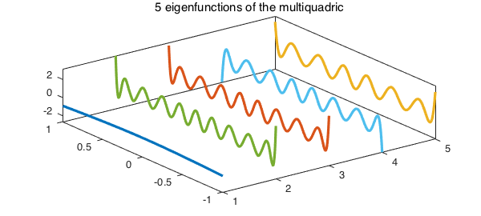

function MaxTrace()
1. Introduction
Suppose $f(x,y)$ is a symmetric function of two variables defined on a square $[a, b] \times [a, b]$. We consider the problem of maximizing $$ trace(G^T \kern -2pt f \kern 1pt G) ,\ \ \ \ \ (1) $$ over all $\infty \times k$ quasimatrices $G$ defined on $[a, b]$ with orthonormal columns, i.e., $$ G^T \kern -1pt G = I_k, $$ where $I_k$ is the $k \times k$ identity matrix.
We can solve this problem via the spectral decomposition $$ f(x,y) = \sum_{i=1}^{\infty} \lambda_i \, q_i(x)\,q_i(y), $$ where $\lambda_1 \geq \lambda_2 \geq \dots$ are eigenvalues and $q_1, q_2, \dots$ are orthonormal eigenfunctions of $f$ when viewed as a the kernel of an integral operator. A solution to the maximum trace problem consists of the eigenfunctions corresponding to the $k$ largest eigenvalues of $f$, $$ G(x) = [~q_1(x)\ | \ q_2(x) \ | \ \cdots \ | \ q_k(x)~]. $$ This is a continuous analogue of the maximum trace problem for symmetric matrices [1], which can be solved via the Courant-Fischer eigenvalue characterization [3].
For illustration, we look at four symmetric bivariate functions in Chebfun. The function U = ev(f, k) in the following computes eigenvectors corresponding to the first $k$ (algebraically) largest eigenvalues of the symmetric chebfun2 object f. In order to compute the spectral decomposition of a symmetric function with a finite numerical rank, we apply the trick used in [2].
2. Example: square peg
This is the approximate characteristic function of a square.
f = cheb.gallery2('squarepeg')
f =
chebfun2 object
domain rank corner values
[ -1, 1] x [ -1, 1] 1 [9.1e-13 9.1e-13 9.1e-13 9.1e-13]
vertical scale = 1
Since $f$ is a symmetric rank 1 function, it only makes sense to solve (1) for $k = 1$. We plot the 2D function $f$
k = 1; U = ev(f, k); plot(f), colormap(summer), zlim([0 1])
We also plot the 1D function $U$ which solves (1).
plot(U)
3. Example: tilted peg
Next, we try a tilted variant of the square peg with rank 100. This is like the function cheb.gallery2('tiltedpeg'), except with the tilting angle modified to make $f$ symmetric. We solve (1) for $k = 4$ and plot the four columns of our solution.
ff = @(x,y)1./((1+(x+y).^20).*(1+(y-x).^20))
f = chebfun2(ff);
k = 4;
U = ev(f, k);
clf, plot(U)
x = chebfun('x'); one = 1 + 0*x;
for j = 1:k
plot3(j*one, x, U(:,j),'linewidth',1.6), hold on
end
title('4 eigenfunctions of the tiltedpeg'), axis tight
view([-43 48]), hold off, box on
ff =
@(x,y)1./((1+(x+y).^20).*(1+(y-x).^20))

4. Example: waffle
This is another symmetric function. It has horizontal and vertical ridges and we solve (1) for $k = 5$.
[f, ff] = cheb.gallery2('waffle')
k = 5;
U = ev(f, k);
for j = 1:k
plot3(j*one, x, U(:,j),'linewidth',1.6), hold on
end
title('5 eigenfunctions of the waffle'), axis tight
view([-37 59]), hold off, box on
f =
chebfun2 object
domain rank corner values
[ -1, 1] x [ -1, 1] 29 [0.0032 0.0032 0.0032 0.0032]
vertical scale = 1
ff =
@(x,y)1./(1+1e3*((x.^2-.25).^2.*(y.^2-.25).^2))

5. Example: multiquadric
Our last test case is a multiquadric kernel for $k = 5$.
c = 0.6;
mq = @(x,y) sqrt((x.^2+y.^2) + c^2);
f = chebfun2(mq)
k = 5;
U = ev(f, k);
for j = 1:k
plot3(j*one, x, U(:,j),'linewidth',1.6), hold on
end
title('5 eigenfunctions of the multiquadric'), axis tight
view([-37 59]), hold off, box on
f =
chebfun2 object
domain rank corner values
[ -1, 1] x [ -1, 1] 11 [ 1.5 1.5 1.5 1.5]
vertical scale = 1.5

Let's compare the optimal solution to (1) for our multiquadric with the value of the objective function for another orthonormal quasimatrix $U2$, the first 5 Legendre polynomials computed via QR factorization of the Vandermonde quasimatrix:
optimal = trace(U'*f*U) U2 = qr(x.^(1:k)); leg_trace = trace(U2'*f*U2)
optimal = 2.024827967723096 leg_trace = 1.596796281773389
function U = ev(f, k)
% U = EV(F, K) returns eigenfunctions corresponding to K algebraically
% largest eigenvalues of a symmetric chebfun2 object F.
[U,S,V] = svd(f);
s = zeros(size(U,2),1);
for i=1:size(U,2)
s(i) = U(:,i)'*V(:,i); % inner product of eigenfunctions
end
Lambda = sign(s).*diag(S); % eigenvalues of f
[~, idx] = sort(Lambda);
ind = flip(idx(end-k+1:end)); % indices of the k largest eigenvals
U = U(:, ind); % corresponding eigenfunctions
end
References
-
S. Boyd, Low rank approximation and extremal gain problems, Lecture notes for Introduction to Linear Dynamical Systems, Stanford University, 2015.
-
B. Hashemi, Nearest positive semidefinite kernel, Chebfun Example, Feb. 2016. http://www.chebfun.org/examples/approx2/NearestPSDKernel.html
-
E. Kokiopoulou, J. Chen, and Y. Saad, Trace optimization and eigenproblems in dimension reduction problems, Numerical Linear Algebra with Applications 18 (2011) 565-602.
end